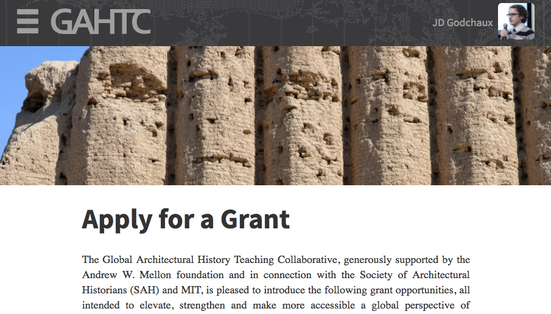

class: center,top,open .blackBar[ .left-half-div[] .right-half-div[ .title[GAHTC 2.0] <p> JD Godchaux, CTO [NiJeL](http://nijel.org) [@nijel_mapping](https://twitter.com/nijel_mapping) </p> ] ] --- class: very-light-grey .la-belle.la-belle-title.center[Today's Agenda] <br><br> .full-div[ .card[  Introduction to NiJeL ] ] .full-div[ .card[  Introduction to GAHTC 2.0 ] ] .full-div[ .card[  Using GAHTC 2.0 ] ] .full-div[ .card[  Question & Answer ] ]  --- class: very-light-grey .la-belle.la-belle-title.center[Who is NiJeL] .left-half-div[ .card.center[ Academics] .card.center[ Data Scientists] ] .right-half-div[ .card.center[ Visualizers] .card.center[ Storytellers] ]  --- class: very-light-grey .la-belle.la-belle-title.center[Our Core Areas] .full-div[ .card.small-text[  ] ]  --- class: very-light-grey .la-belle.la-belle-title.center[Examples of our work] .left-half-div[ [.card.center[ Sound Health Explorer]](http://soundhealthexplorer.org/) [.card.center[ Future Skyline 3-D]](https://www.dnainfo.com/new-york/visualizations/skyline) ] .right-half-div[ [.card.center[ UN SDGs: Education 2030]](http://uis.unesco.org/apps/visualisations/education-2030/) [.card.center[ Busturnaround.nyc]](http://busturnaround.nyc/) ]  --- class: very-light-grey .la-belle.la-belle-title.center[Our Partners] .full-div[ .card[ .flex-container[    ] .flex-container[    ] .flex-container[    ] .flex-container[   ] ] ]  --- class: very-light-grey .title.larger-title.center[GAHTC 2.0] .full-div[ .card[  Searchable library of content created by GAHTC members ] ] .full-div[ .card[  Browseable repository of content ] ] .full-div[ .card[  Network of GAHTC members ] ] .full-div[ .card[  Information on grant opportunities ] ]  --- class: very-light-grey .la-belle.la-belle-title.center[Technology] <br><br> .full-div[ .card[  Django ] ] .full-div[ .card[  python-pptx, textract & Libreoffice ] ] .full-div[ .card[  Elasticsearch ] ]  --- class: very-light-grey .la-belle.la-belle-title.center[Search] .full-div-wide[ .card.small-text[ <a href="http://gahtc.org/" target="_blank"></a> ] ]  --- class: very-light-grey .la-belle.la-belle-title.center[Getting content] .full-div-wide[ .card.small-text[ <a href="http://gahtc.org/search/?keyword=syria" target="_blank"></a> ] ]  --- class: very-light-grey .la-belle.la-belle-title.center[Exploring content] .full-div-wide[ .card.small-text[ <a href="http://gahtc.org/browse/" target="_blank"></a> ] ]  --- class: very-light-grey .la-belle.la-belle-title.center[Browsing members] .full-div-wide[ .card.small-text[ <a href="http://gahtc.org/members/" target="_blank"></a> ] ]  --- class: very-light-grey .la-belle.la-belle-title.center[Grant opportunities] .full-div-wide[ .card.small-text[ <a href="http://gahtc.org/pages/grants/" target="_blank"></a> ] ]  --- class: center,middle,thanks .la-belle.la-belle-title.center[Questions? Comments?] --- class: very-light-grey .la-belle.la-belle-title.center[Contact me] <br> .half-div.center[ .card.center[ JD Godchaux CTO and Co-Founder [jd@nijel.org](mailto:jd@nijel.org) 602-325-3445 ] ]  --- class: center,middle,thanks .la-belle.la-belle-title.center[Thank you!]